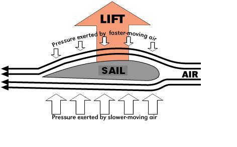
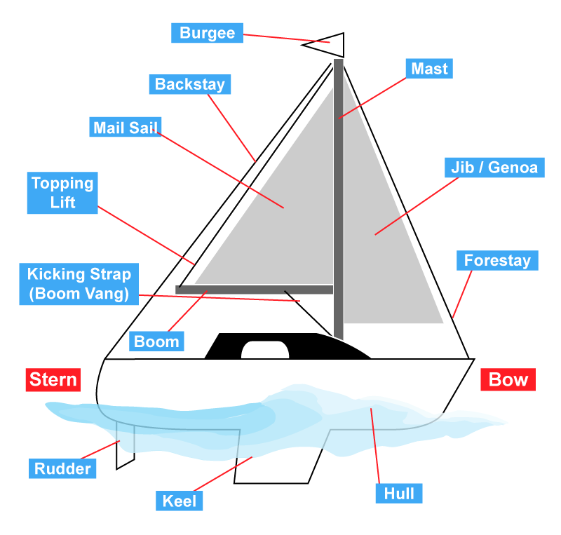
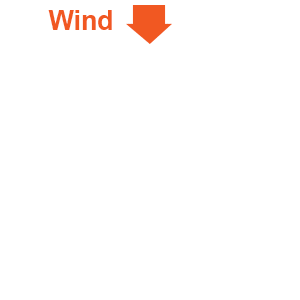

|
Sailing
Theory
How Boats Sail
Lift
Explaining how a boat sails downwind is fairly straight forward, you
open the sails as far as possible and the wind pushes the sails, moving
the boat along...simple. Explaining how a boat sails upwind is a little
harder, after all, you're sailing against the only apparent force (the
wind) that you have to push you along. However, the force of the wind
on a sail works exactly in the same way as a wing on aeroplane, air
moves across the surface of the wing and creates a force called lift.
Lift is created by the following:
Air travelling around the outside of the curve of the sail takes a
longer path than the air around the inside of the sail. This longer
path means the air travels faster around the curve of the path, causing
a lower pressure than the air surrounding it.
Inside of the sail, the air has a shorter path to travel so travels at a much lower speed and has a lot more pressure.
This difference in pressure between the inside of the sail and the
outside of the sail causes lift, a force that helps push the boat
through the water.
Keel / Centreboard
Lift isn't the only force required for a boat to travel upwind,
keels/centreboards prevent the boat from being pushed sideways through
the water by the wind. The force applied by the water on the keel acts
in the opposite direction to the force of the wind, these 2 forces
squeeze the boat, pushing it forwards through the water, similar to
when you squeeze a bar of soap in your hands.
|

|
Parts of a Boat
Knowing the parts of a boat is essential to sailing with other crew, it
allows communications and instructions to be passed around and
understood with confidence.
- Backstay
- Performs the same job as the Forestay but is attached to the stern of the boat as opposed to the bow
- Boom
- A horizontal spar attached to the aft of the mast just below
the sail. The boom is attached to the sail and keeps the sail flatter
when at an angle from the centerline of the boat
- Bow
- Burgee
- A flag identifying the recreational organisation of a boat
- Forestay
- Most commonly a stainless steel wire, the forestay is a piece
of standing rigging which helps keep the mast upright. It is attached
at the bow of the boat, to the top of the mast
- Hull
- Watertight body of the boat
- Jib
- Triangular sail at the foremast of the vessel
- Keel
- Generates lift using the forward motion of the boat,
counteracting the leeward force of the wind. It also provides ballast
to the boat
- Kicking Strap
- A line that connects the boom to the lower of the mast to provide down force on the boom
- Main Sail
- Sail located behind the main mast of the vessel
- Mast
- A tall vertical spar that supports the sails
- Rudder
- Used to steer the boat through the water
- Stern
- Topping Lift
- A line used to hold the boom up while the sail is lowered. Most
commonly attached to the aft of the boom to the top of the mast. It is
loosened or removed once the sail is raised
|

|
Points of Sail
Points of Sail are based on the angle a boat is sailing in relation to
the direction wind is coming from. Understanding the points of sailing
is important as the wind is your energy source and will have an affect
on how well the boat sails, if at all!
- Head To Wind (1)
- Head to wind is when the boat is facing directly into the wind.
While on a Head to Wind point of sail the boat will in the No Sail
Zone, the sails will start to flap, and the boat will slow down,
eventually starting to drift backwards
- Close Hauled (2)
- Sailing as close to the No Sail Zone as possible without
entering it. The sails of the boat will need to be in tight, and if
sailing a dinghy, the centreboard should be fully down
- Close Reach (3)
- Includes any angle to the wind between close hauled and a beam
reach. Sails are let out more than close hauled and on a sailing dinghy
the centreboard should be about ¾ down
- Beam Reach (4)
- This is a precise point of sail and is exactly perpendicular
(or 90°) to the direction of the wind, from the direction of the wind.
Here the sails are let out half way and the centreboard on sailing
dinghies is set to ½ down. Generally for most boats this is an
efficient point of sail and can provide for the fastest speeds
- Broad Reach (5)
- A broad reach is not a precise point of sail and can be any
angle to the wind from a beam reach to running downwind. The sails
should be let out and for dinghy boats the centreboard is only ¼ of the
way down. Even though you are starting to sail down wind a little bit,
you actually lose efficiency from a beam reach and will generally see
slower speeds
|

|
|